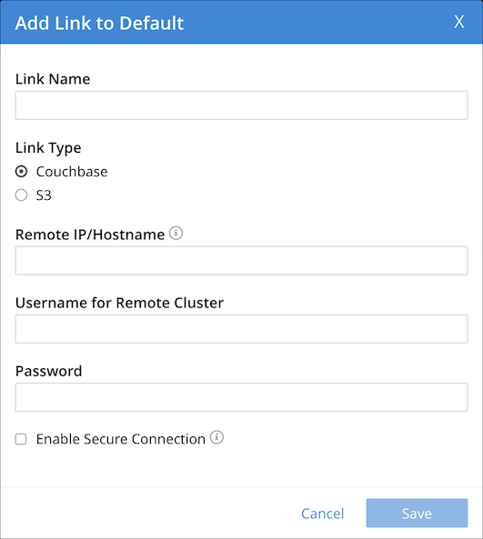
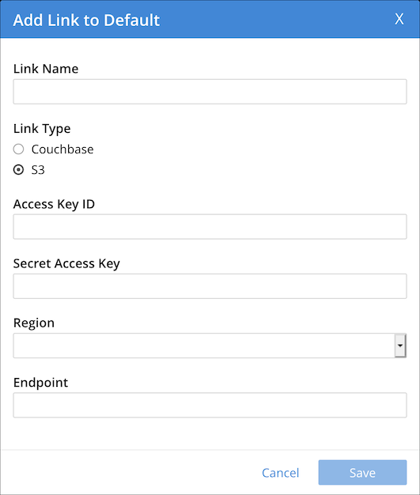

The Analytics Workbench enables you to create or edit remote links and external links. Refer to Remote Links and External Links for further details on remote links and external links.
Local links, remote links, and external links are displayed in the insights sidebar of the Analytics Workbench. Each link is listed below the heading for the Analytics scope which contains it.
In the insights sidebar, local links are labeled cb local, remote links are labeled cb remote, and external links to the Amazon S3 service are labeled S3.
Creating a Remote Link
To create a link to a remote Couchbase cluster:
-
In the insights sidebar, click + remote link next to the Analytics scope where you want to create the link.
The Add Link to Scope dialog is displayed, where Scope is the name of the scope.
-
In the Link Name box, enter a name for the link.
-
Under Link Type, select Couchbase.
The Couchbase link options are displayed.
 -
In the Remote IP / Hostname box, enter the hostname or IP address of the remote Couchbase cluster, including the port number — by default,
8091. -
If necessary, in the Username for Remote Cluster box, enter the remote username. This is required for links with no encryption or half encryption, and for links with full encryption if using a password.
-
If necessary, in the Password box, enter the remote password. This is required for links with no encryption or half encryption, and for links with full encryption if using a username.
-
If required, select the Enable Secure Connection check box, then select the type of encryption:
-
Half — Passwords are encrypted using SCRAM-SHA, but data is not.
-
Full — All data and passwords are encrypted and TLS is used.
-
-
If you specified Full encryption, enter the following additional information:
-
In the Certificate Information box, enter the content of the target cluster root certificate.
-
If necessary, in the Client Certificate box, enter the content of the client certificate. This is required for links with full encryption if using a client key.
-
If necessary, in the Client Key box, enter the content of the client key. This is required for links with full encryption if using a client certificate.
-
-
Choose Save to create the link, or Cancel to cancel.
When creating or altering a remote link using an alternate address, note the following:
-
At least one node in the remote cluster must expose the
mgmtport (rest_port, default 8091) or themgmtSSLport (ssl_rest_port, default 18091). -
Furthermore, all data nodes in the remote cluster must expose the
kvport (memcached_port, default 11210) or thekvSSLport (memcached_ssl_port, default 11207).
Failure to do so will result in an error.
| The SSL ports are required when the encryption mode is set to Full; the non-SSL ports are required otherwise. |
You can also create a remote link using the command-line interface or the REST API. Refer to couchbase-cli analytics-link-setup or Analytics Links REST API.
Creating an External Link
To create an external link to the Amazon S3 service:
-
In the insights sidebar, click + remote link next to the Analytics scope where you want to create the link.
The Add Link to Scope dialog is displayed, where Scope is the name of the scope.
-
In the Link Name box, enter a name for the link.
-
Under Link Type, select S3.
The S3 link options are displayed.
 -
In the Access Key ID box, enter the Amazon S3 access key ID.
-
In the Secret Access Key box, enter the Amazon S3 secret access key.
-
Open the Region drop-down list and select the Amazon S3 region.
-
If necessary, in the Endpoint box, enter the Amazon S3 service endpoint.
-
Choose Save to create the link, or Cancel to cancel.
| When creating a link to the Amazon S3 service, be sure to follow best practices for security. AWS root account credentials should never be used. The policy for the created IAM User roles should be as strict as possible and only allow access to the required data and required resources. You only need to know the Access Key Id and the Secret Access Key for the created IAM User role to access the S3 service. The link will be able to access whatever is permitted to the IAM User, since it will be using the IAM User credentials to interact with the AWS S3 service. |
You can also create an external link using the command-line interface or the REST API. Refer to couchbase-cli analytics-link-setup or Analytics Links REST API.
Editing a Link
You can edit a remote link or an external link. You cannot edit a local link.
To edit a remote link or an external link:
-
Under the heading for the required Analytics scope, click the name of the link.
The Edit Link dialog is displayed. This contains the same options as the Add Link To Scope dialog.
-
Edit the details of the link as required. Note that you cannot change the name of the link or the link type. For details of the options, refer to Creating a Remote Link or Creating an External Link.
-
Choose Save to update the link, or Close Dialog to cancel.
You can also edit a remote link or external link using the command-line interface or the REST API. Refer to couchbase-cli analytics-link-setup or Analytics Links REST API.
Deleting a Link
You can delete a remote link or an external link. You cannot delete a local link.
To delete a remote link or an external link:
-
Under the heading for the required Analytics scope, click the name of the link.
The Edit Link dialog is displayed.
-
Choose Drop Link.
The Confirm Drop Link dialog is displayed.
-
Choose Continue to delete the link, or Cancel to cancel.
You can also delete a remote link or external link using the command-line interface or the REST API. Refer to couchbase-cli analytics-link-setup or Analytics Links REST API.